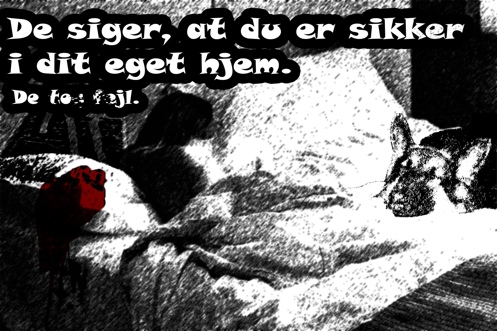
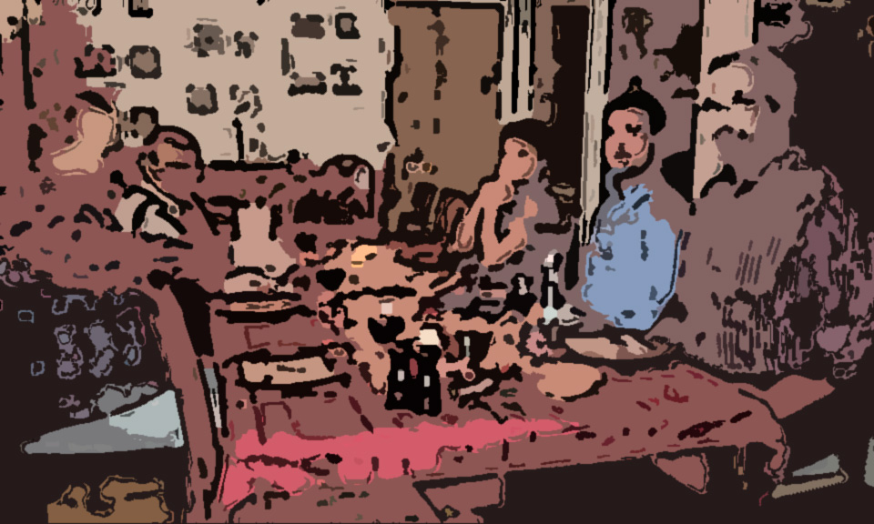
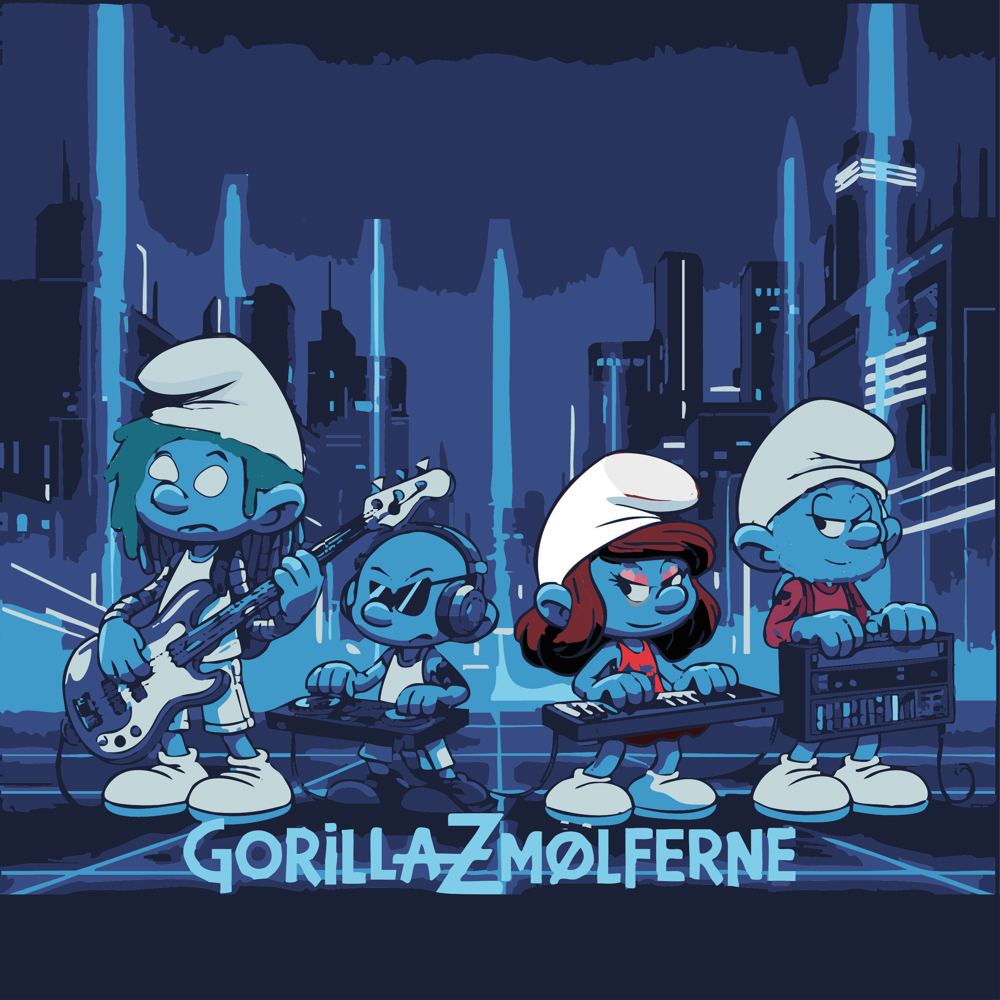

Flow 3 – Visuelt koncept til digitale medier
I Flow 3 arbejdede vi med visuelle udtryk på tværs af Photoshop, Illustrator og konceptudvikling. Fokus var på klassiske designværktøjer uden brug af AI, så håndværket og teknikkerne kom i centrum. Flowet bestod af øvelser i billedbehandling, vektorgrafik og et afsluttende projekt: et LP-cover og digitalt banner for en valgt musiker.
Photoshop – Billedbehandling og stiludvikling
Photoshop-delen bestod af tre opgaver, hvor jeg arbejdede med masker, lys/skygge, kontraster, typografi, farver og kreative billedstile. Målet var at styrke teknisk kontrol og visuel forståelse.
Opgave 1 – Semi Noir / Neo Noir plakat
Jeg lavede en uhyggelig plakat baseret på en vandrehistorie i en sort/hvid noir-stil med dramatisk lys, hårde skygger og en enkelt accentfarve. Fokus var komposition, stemning og kontrast.

Opgave 2 – Hobby som Pop Art
Jeg lavede en Pop Art-plakat i Warhol-stilen. Her arbejdede jeg med stærke farver, duotone-effekter og halftone-struktur for at skabe et grafisk, ikonisk udtryk.

Opgave 3 – Digitalt maleri
Et familiefoto blev transformeret til et digitalt maleri ved hjælp af Filter Gallery, penselteksturer og farveforenkling.

Illustrator – Vektorgrafik og formforståelse
I Illustrator gennemgik vi grundlæggende vektorværktøjer som Pen Tool, Pathfinder og Shape Tools. Vi byggede kompetencer op gennem tre øvelser.
Øvelse 1 – Enkel form & logo-skitse
En simpel form blev brugt som base for et hurtigt logokoncept med fokus på geometri, balance og typografi.
Øvelse 2 – Ikonserie
Jeg designede tre ikoner udelukkende med streg, fyld og rene former. De blev eksporteret som SVG/AI for at bevare vektorkvaliteten.
Øvelse 3 – Grafisk plakat eller kort
En samlet komposition med former, tekst og ikoner. Arbejdet fokuserede på alignment, hierarki og begrænset farvepalette (2–3 farver).
Flowprojekt – LP-cover & digitalt banner
Det afsluttende gruppeprojekt bestod af at udvikle et visuelt koncept for en selvvalgt musiker. Vi lavede både et LP-cover og et digitalt banner til en streamingtjeneste. Processen omfattede moodboards, stilvalg, farvepaletter og opbygning af et sammenhængende udtryk på tværs af formater.
Koncept & Moodboards
Vi researchede art direction, genreæstetik og visuel identitet og samlede materialet i moodboards, som dannede grundlag for den endelige stil.
Resultat
Flowet resulterede i et fuldt visuelt set-up: et LP-cover i kvadratisk format og et digitalt banner optimeret til streamingplatforme.


Hvad jeg lærte
Jeg blev markant stærkere i både Photoshop og Illustrator og fik en bedre forståelse for konceptudvikling, moodboards og sammenhængende visuelle identiteter. Flow 3 trænede både teknisk håndværk og evnen til at udvikle et design fra idé til færdigt produkt.